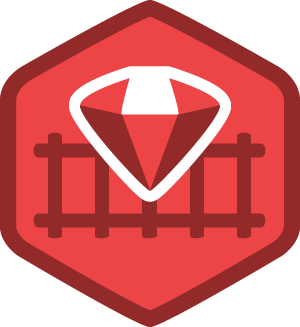

1 # El nombre del proyecto no puede ser una palabra reservada.
2 $ rails new <nombre_del_proyecto>
1 # El nombre del proyecto no puede ser una palabra reservada.
2 $ rails new <nombre_del_proyecto>Los directorios creados son los siguientes
1 $ bundle install1 include:source/Gemfile_base1 # instala la última versión de sqlite3
2 gem 'sqlite3'
3 # instala la última versión de uglifier que gestiona la compresión de ficheros
4 # mientras sea una versión igual o superior a la indicada
5 gem 'uglifier', '>= 1.3.0'
6 # Instala coffee-rails versión 4.0.*, la última versión, pero nunca la 4.1
7 gem 'coffee-rails', '~> 4.0.0'1 class Cliente < ActiveRecord::Base
2 end1 cliente = Cliente.new
2 cliente.nombre = "Rubén López Serrano"
3 cliente.fecha_nacimiento = "1971-12-21"
4 cliente.saveActiveRecord está basado en un patrón de diseño.
Son soluciones estándar a problemas comunes de diseño de softwareActiveRecord abstrae del uso de SQL para evitar el acoplamiento con una base de datos concreta. Sin embargo, permite también ejecutar SQL diréctamente en el lenguaje nativo de la base de datos./